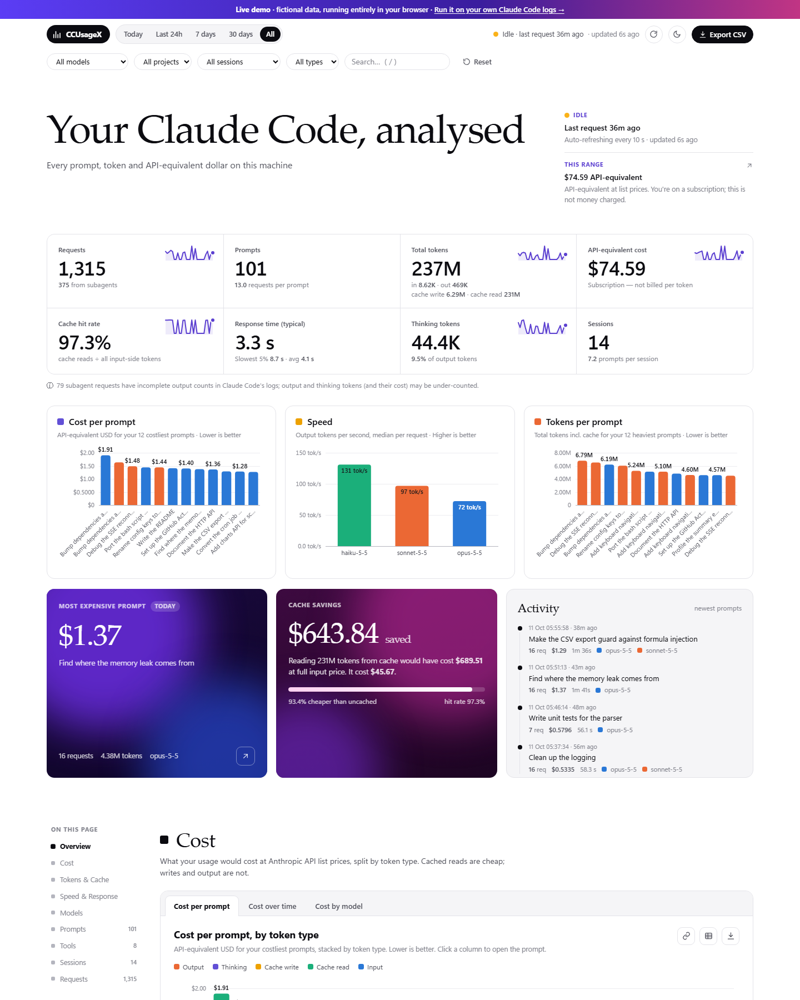
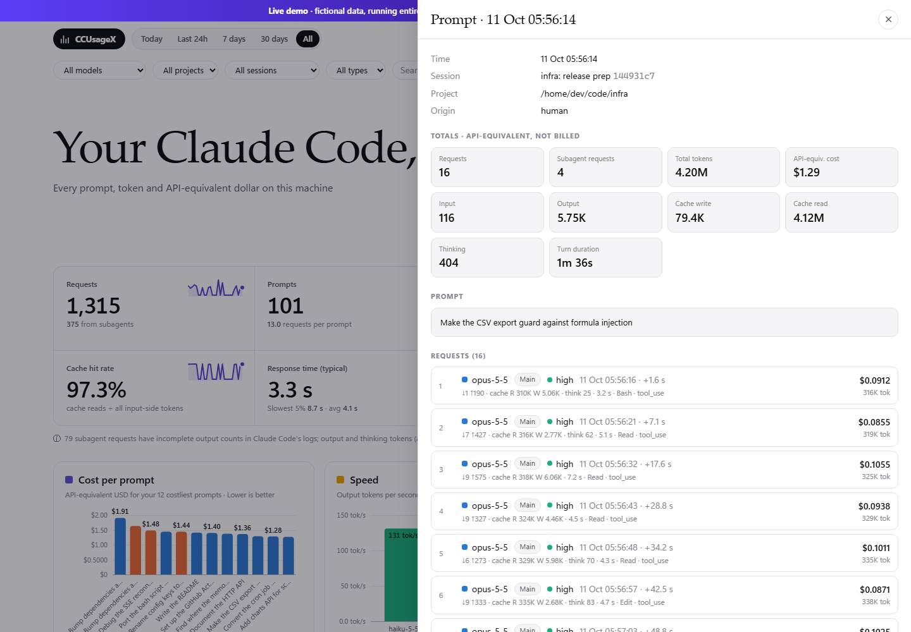

Cost per prompt, model and project
API-equivalent cost for every prompt and request, split by model and project. See which prompts were expensive and why, using prices you can edit.
Free · Open source · Runs locally
CCUsageX is a Claude Code usage dashboard that reads Claude Code's own logs on your machine. Track token usage and API-equivalent cost per prompt, see what prompt caching saved you, and keep your history, with nothing leaving your computer.
Run it now (Node.js 18+)
npx github:MHJoy99/CCUsageXOr clone and start
git clone https://github.com/MHJoy99/CCUsageX.git && cd CCUsageX && node server.js

Fictional demo data.
Features
Most tools stop at daily totals. CCUsageX ties tokens, cost, time and tools back to the exact prompt that caused them.
API-equivalent cost for every prompt and request, split by model and project. See which prompts were expensive and why, using prices you can edit.

Input, output, cache write, cache read and thinking tokens, plus your cache hit rate and the dollars prompt caching saved.

Typical and slowest-5% response times, and tokens per second for every model you use, so you can tell when something is slow.

Search your prompts, open any one to see its text, tools, requests and subagent work, and export everything to CSV.
Subagent work is charged to the prompt that spawned it, so one prompt shows its true total.
A local copy of your usage survives Claude Code's automatic transcript cleanup.
Rescans every few seconds, incremental, no database and no build step.

See your Claude Pro or Max 5-hour session and 7-day weekly limits, with reset times and a pace projection, plus per-model weekly limits when Claude Code reports them. CCUsageX reads Claude Code's own /usage report and refreshes it automatically every 2 minutes while the dashboard is open. It uses no login, no model tokens and no credentials. The optional status line gives instant updates in terminal sessions.
Screenshots
Screenshots use fictional data. The live demo lets you click around.


How it works
~/.claude/projects/**/*.jsonl. CCUsageX reads them read-only.~/.ccusagex/store.json keeps your history after Claude Code cleans up.127.0.0.1:3020 serves the dashboard and a small JSON API.

Quick start
With Node.js 18 or newer, run npx github:MHJoy99/CCUsageX and open http://127.0.0.1:3020. Prefer a checkout? Clone the repo and run node server.js. Prices live in config.json; port and data folder are one flag or variable away.
Privacy
Prompts are sensitive. CCUsageX is built so you do not have to trust a service, only a small piece of code you can read.
Comparison
Each of these is good at something different. Here is where CCUsageX fits, and where another tool is the better pick.
| CCUsageX | ccusage | Claude-Code-Usage-Monitor | Sniffly | |
|---|---|---|---|---|
| Best at | Prompt-level cost, prompt text and history in a web UI | Fast CLI cost reports (daily, monthly, session, 5-hour blocks) | Live terminal monitor of session limits and burn rate | Local web dashboard of usage stats and message history |
| Interface | Local web dashboard | Command line | Terminal UI | Local web dashboard |
| Setup | npx or clone, Node 18+, zero dependencies | npx / bunx or global install | Python package | Python package |
| Cost per prompt | Yes · API-equivalent | Reports by day, month, session | Not its focus | Not its focus |
| Prompt text, searchable | Yes | No | No | Yes · message history |
| Cache savings in dollars and hit rate | Yes | Shows cache tokens and cost | Shows cache tokens | Shows cache tokens |
| Subagent attribution to the prompt | Yes · rolled into the parent prompt | Not its focus | Not its focus | Not its focus |
| History after Claude Code cleans up logs | Yes · own local store | Reads live logs | Reads live logs | Reads live logs |
| Plan limits and burn-rate forecast | Yes · Pro and Max, from the /usage report | 5-hour block reports | Yes · its main job | No |
| Works with other AI coding tools | Claude Code only | Yes · multi-tool | Claude Code only | Claude Code only |
Want a fast CLI or multi-tool reports? Use ccusage. Watching your plan limits live? Use Claude-Code-Usage-Monitor. Want to know which prompt cost what, and keep that history? That is CCUsageX.
FAQ
Claude Code writes every request, with its token counts, to local transcript files. CCUsageX reads those files and shows input, output, cache write, cache read and thinking tokens per prompt, request, model, project and session.
Run npx github:MHJoy99/CCUsageX (Node.js 18+) and open http://127.0.0.1:3020. You can also try the live demo with fictional data first.
CCUsageX multiplies the tokens in each request by Anthropic's API list prices and shows an API-equivalent cost per prompt, model, project and day.
If you use Claude Code through a Pro or Max subscription you are not billed per token. The figure is what the same usage would cost on the API, which is a useful measure of how heavy your usage is.
Claude Code saves each session as a JSONL transcript in ~/.claude/projects/<project>/<session-id>.jsonl (on Windows, C:\Users\<you>\.claude\projects). Subagent runs are stored in subagents sub-folders.
If you set CLAUDE_CONFIG_DIR, the folder moves there and CCUsageX follows it. Claude Code deletes old transcripts after a retention period, 30 days by default.
No. The server listens on 127.0.0.1 only, has no telemetry or analytics, no dependencies and no outbound requests. It opens Claude Code's logs read-only and keeps its own copy in ~/.ccusagex/store.json on your machine.
The live demo on this site runs entirely in your browser with fictional numbers.
ccusage is an excellent command-line tool that prints daily, monthly, session and 5-hour-block cost reports, and it supports more tools than Claude Code. CCUsageX is a local web dashboard focused on the prompt level: what each prompt cost, the prompt text, cache savings, subagent attribution, and a history that outlives Claude Code's log cleanup.
They answer different questions and work well side by side.
For some streamed requests, mostly from subagents, Claude Code logs only the usage snapshot taken when the stream started, when output_tokens is still a small placeholder, instead of the final total.
CCUsageX keeps the highest value it sees and flags those requests as incomplete, so output and thinking tokens (and their cost) can be lower than the real figure. Input and cache counts are reported at stream start and are not affected.
Yes. Claude Code writes the same logs on every plan, so the dashboard works the same way. The cost shown is API-equivalent, not your bill.
CCUsageX reads your plan limits only from Claude Code's /usage report, described in "Can CCUsageX show my Claude plan usage limits?" below. Otherwise it is a usage and cost analyzer, not a limit monitor.
Yes, for Claude Pro and Max subscriptions. CCUsageX reads Claude Code's documented /usage report, which shows your 5-hour session and 7-day weekly limits with their reset times, plus per-model weekly limits when Claude Code reports them. The dashboard refreshes it automatically every 2 minutes while it is open, and a refresh button runs it on demand. It uses no model tokens, writes no transcript, needs no login, makes no direct API calls and never reads credentials. An optional status line (npm run statusline:install) gives instant updates in terminal sessions; npm run statusline:uninstall reverses it.
Yes. Edit pricing.models in config.json: input, output and cacheRead prices in USD per million tokens, plus cache-write multipliers (1.25 for the 5-minute cache, 2 for the 1-hour cache) and optional fast-mode and long-context tiers. Restart the server to apply changes.
The defaults follow Anthropic's published API list prices, last checked 2026-10-06.
You need Node.js 18 or newer. Run npx github:MHJoy99/CCUsageX, or clone the repository and start it with node server.js. The dashboard opens on port 3020; change it with --port or the PORT environment variable.
On Windows there are also double-click launcher scripts, Open-CCUsageX.cmd and Close-CCUsageX.cmd.
Yes. CCUsageX scans the transcripts incrementally every few seconds and stores its own copy in ~/.ccusagex/store.json (override with CCU_DATA_DIR). Totals stay intact after Claude Code cleans up its transcripts.
History starts from whatever transcripts exist when you first run it, so the sooner you start it, the more you keep.
Prompt caching lets Claude Code re-use context it already sent. Cache write tokens store that context, and cache read tokens re-use it at a fraction of the normal input price.
"Cache saved" is what the cache-read tokens would have cost at the full input price minus what they cost at the cache-read price. The cache hit rate is the share of input served from cache.
Open the live demo in your browser, or run CCUsageX on your own logs in one command.